In [1]cell 2
l = [5,6,7,5,4,6,7,5] sum(l)/len(l)
Output
5.625
In [2]cell 4
l_with_outlier = l + [100] sum(l_with_outlier)/len(l_with_outlier)
Output
16.11111111111111
In [3]cell 6
import statistics statistics.median(l), statistics.median(l_with_outlier)
Output
(5.5, 6)
In [4]cell 8
statistics.pstdev(l), statistics.pstdev(l_with_outlier)
Output
(0.9921567416492215, 29.673948336487737)
In [5]cell 10
import matplotlib.pyplot as plt
import numpy as np
labels = ["Mean", "Median"]
without = [sum(l)/len(l), statistics.median(l)]
with_out = [sum(l_with_outlier)/len(l_with_outlier), statistics.median(l_with_outlier)]
x = np.arange(len(labels))
width = 0.35
fig, ax = plt.subplots(figsize=(5.5, 3.5))
bars1 = ax.bar(x - width/2, without, width, label="Without outlier", color="#2a78d6")
bars2 = ax.bar(x + width/2, with_out, width, label="With outlier (100 added)", color="#d03b3b")
ax.bar_label(bars1, fmt="%.2f", padding=2, fontsize=8.5)
ax.bar_label(bars2, fmt="%.2f", padding=2, fontsize=8.5)
ax.set_xticks(x)
ax.set_xticklabels(labels)
ax.set_ylabel("Value")
ax.set_title("One extra value moves the mean a lot, the median barely at all")
ax.legend(frameon=False)
ax.spines[["top", "right"]].set_visible(False)
plt.tight_layout()
plt.show()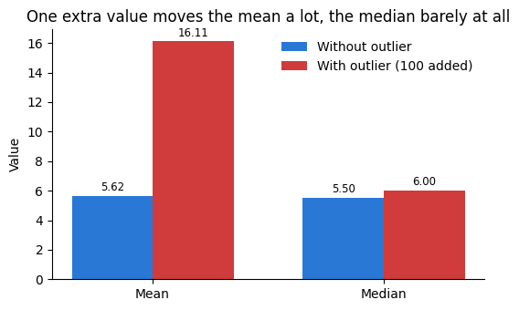
In [6]cell 14
import pandas as pd import seaborn as sns import matplotlib.pyplot as plt
In [7]cell 15
dataset = pd.read_csv("../../_shared_data/loans.csv")
dataset.head(3)Output
Loan_ID Gender Married Dependents Education Self_Employed \ 0 LP001001 Male Yes 0 Not Graduate No 1 LP001002 Male Yes 0 Not Graduate No 2 LP001003 Female No 0 Graduate No ApplicantIncome CoapplicantIncome LoanAmount Loan_Amount_Term \ 0 1686.0 1020 80.0 360.0 1 2437.0 1201 122.0 360.0 2 8313.0 1065 319.0 360.0 Credit_History Property_Area Loan_Status 0 1.0 Semiurban Y 1 1.0 Urban Y 2 1.0 Urban Y
In [8]cell 16
dataset.info()
Output
<class 'pandas.DataFrame'> RangeIndex: 618 entries, 0 to 617 Data columns (total 13 columns): # Column Non-Null Count Dtype --- ------ -------------- ----- 0 Loan_ID 618 non-null str 1 Gender 605 non-null str 2 Married 612 non-null str 3 Dependents 603 non-null str 4 Education 609 non-null str 5 Self_Employed 586 non-null str 6 ApplicantIncome 616 non-null float64 7 CoapplicantIncome 618 non-null int64 8 LoanAmount 596 non-null float64 9 Loan_Amount_Term 597 non-null float64 10 Credit_History 568 non-null float64 11 Property_Area 609 non-null str 12 Loan_Status 618 non-null str dtypes: float64(4), int64(1), str(8) memory usage: 62.9 KB
In [9]cell 18
dataset.describe()
Output
ApplicantIncome CoapplicantIncome LoanAmount Loan_Amount_Term \
count 616.000000 618.000000 596.000000 597.000000
mean 4730.256494 1385.077670 223.031879 312.723618
std 2180.942773 1611.760337 93.055097 89.102680
min 1500.000000 0.000000 40.000000 36.000000
25% 3160.500000 0.000000 152.000000 300.000000
50% 4325.000000 1089.000000 208.500000 360.000000
75% 5810.750000 2217.750000 282.000000 360.000000
max 16981.000000 10288.000000 480.000000 360.000000
Credit_History
count 568.000000
mean 0.836268
std 0.370359
min 0.000000
25% 1.000000
50% 1.000000
75% 1.000000
max 1.000000In [10]cell 20
sns.boxplot(x="CoapplicantIncome",data=dataset) plt.show()

In [11]cell 22
sns.boxplot(x="ApplicantIncome",data=dataset) plt.show()
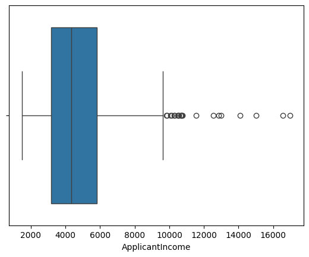
In [12]cell 24
for col in ["ApplicantIncome", "CoapplicantIncome"]:
s = dataset[col].dropna()
Q1, Q3 = s.quantile(0.25), s.quantile(0.75)
IQR = Q3 - Q1
lower_bound, upper_bound = Q1 - 1.5 * IQR, Q3 + 1.5 * IQR
is_outlier = (s < lower_bound) | (s > upper_bound)
print(f"{col}: Q1={Q1:.1f} Q3={Q3:.1f} IQR={IQR:.1f} "
f"bounds=({lower_bound:.1f}, {upper_bound:.1f}) "
f"outliers={is_outlier.sum()} ({100*is_outlier.mean():.2f}%)")Output
ApplicantIncome: Q1=3160.5 Q3=5810.8 IQR=2650.2 bounds=(-814.9, 9786.1) outliers=21 (3.41%) CoapplicantIncome: Q1=0.0 Q3=2217.8 IQR=2217.8 bounds=(-3326.6, 5544.4) outliers=15 (2.43%)
In [13]cell 27
s = dataset["ApplicantIncome"].dropna()
Q1, Q3 = s.quantile(0.25), s.quantile(0.75)
IQR = Q3 - Q1
lower_bound, upper_bound = Q1 - 1.5 * IQR, Q3 + 1.5 * IQR
fig, ax = plt.subplots(figsize=(8, 4))
sns.histplot(s, kde=True, color="#2a78d6", ax=ax, stat="density", alpha=0.35)
# Shade the outlier region in the tail that actually has data past the bound
ax.axvspan(upper_bound, s.max(), color="#d03b3b", alpha=0.18, label="Outlier region")
for val, label in [(Q1, "Q1"), (Q3, "Q3"), (upper_bound, "Q3 + 1.5×IQR")]:
ax.axvline(val, color="#52514e", linestyle="--", linewidth=0.9)
ax.text(val, ax.get_ylim()[1]*0.96, label, rotation=90, va="top", ha="right", fontsize=8)
ax.set_title("ApplicantIncome — distribution with the box plot's outlier boundary")
ax.set_xlabel("ApplicantIncome")
ax.legend(frameon=False)
ax.spines[["top", "right"]].set_visible(False)
plt.tight_layout()
plt.show()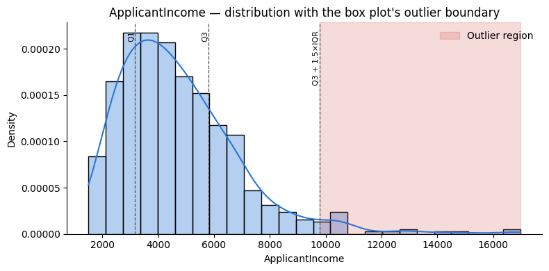
In [14]cell 30
mean, std = s.mean(), s.std()
z_scores = (s - mean) / std
iqr_outliers = (s < lower_bound) | (s > upper_bound)
z_outliers = z_scores.abs() > 3
print(f"IQR method: {iqr_outliers.sum()} outliers flagged")
print(f"Z-score method: {z_outliers.sum()} outliers flagged")
print(f"Flagged by IQR but not Z-score: {(iqr_outliers & ~z_outliers).sum()}")Output
IQR method: 21 outliers flagged Z-score method: 8 outliers flagged Flagged by IQR but not Z-score: 13
In [15]cell 33
print("Shape before:", dataset.shape)
cleaned = dataset[(dataset["ApplicantIncome"] >= lower_bound) & (dataset["ApplicantIncome"] <= upper_bound)]
print("Shape after:", cleaned.shape)
print("Rows dropped:", dataset.shape[0] - cleaned.shape[0])Output
Shape before: (618, 13) Shape after: (595, 13) Rows dropped: 23
In [16]cell 1
import pandas as pd import seaborn as sns import matplotlib.pyplot as plt
In [17]cell 2
dataset = pd.read_csv("../../_shared_data/loans.csv")
dataset.shapeOutput
(618, 13)
In [18]cell 5
q1 = dataset["CoapplicantIncome"].quantile(0.25) q3 = dataset["CoapplicantIncome"].quantile(0.75) q1, q3
Output
(np.float64(0.0), np.float64(2217.75))
In [19]cell 7
IQR = q3-q1 IQR
Output
np.float64(2217.75)
In [20]cell 9
min_range = q1 - (1.5*IQR) max_range = q3 + (1.5*IQR) min_range , max_range
Output
(np.float64(-3326.625), np.float64(5544.375))
In [21]cell 11
both_bounds = dataset[(dataset["CoapplicantIncome"] >= min_range) & (dataset["CoapplicantIncome"] <= max_range)] upper_only = dataset[dataset["CoapplicantIncome"] <= max_range] both_bounds.shape, upper_only.shape
Output
((603, 13), (603, 13))
In [22]cell 14
new_dataset = dataset[dataset["CoapplicantIncome"]<=max_range] dataset.shape, new_dataset.shape
Output
((618, 13), (603, 13))
In [23]cell 16
fig, axes = plt.subplots(1, 2, figsize=(10, 3.5), sharex=True)
sns.boxplot(x="CoapplicantIncome", data=dataset, color="#d03b3b", ax=axes[0])
axes[0].set_title(f"Before (n={dataset.shape[0]})")
sns.boxplot(x="CoapplicantIncome", data=new_dataset, color="#2a78d6", ax=axes[1])
axes[1].set_title(f"After (n={new_dataset.shape[0]})")
for ax in axes:
ax.spines[["top", "right"]].set_visible(False)
plt.tight_layout()
plt.show()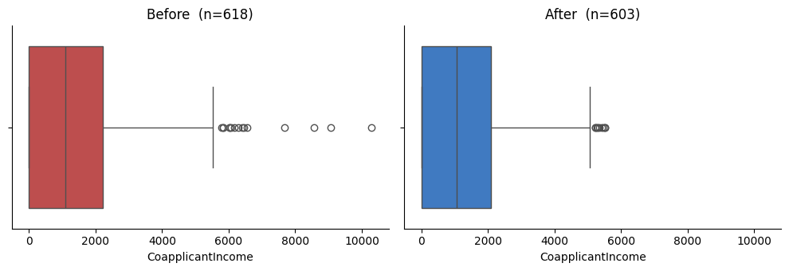
In [24]cell 18
fig, ax = plt.subplots(figsize=(8, 4))
sns.kdeplot(dataset["CoapplicantIncome"], color="#d03b3b", fill=True, alpha=0.25, label=f"Before (n={dataset.shape[0]})", ax=ax)
sns.kdeplot(new_dataset["CoapplicantIncome"], color="#2a78d6", fill=True, alpha=0.35, label=f"After (n={new_dataset.shape[0]})", ax=ax)
ax.axvline(max_range, color="#52514e", linestyle="--", linewidth=0.9)
ax.text(max_range, ax.get_ylim()[1]*0.96, "max_range", rotation=90, va="top", ha="right", fontsize=8)
ax.set_title("CoapplicantIncome distribution — before vs. after removal")
ax.legend(frameon=False)
ax.spines[["top", "right"]].set_visible(False)
plt.tight_layout()
plt.show()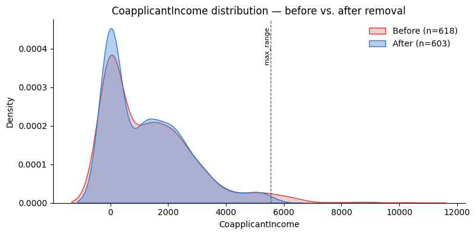
In [25]cell 21
before_mean, before_std = dataset["CoapplicantIncome"].mean(), dataset["CoapplicantIncome"].std()
after_mean, after_std = new_dataset["CoapplicantIncome"].mean(), new_dataset["CoapplicantIncome"].std()
print(f"mean: {before_mean:.1f} -> {after_mean:.1f} ({100*(after_mean-before_mean)/before_mean:+.1f}%)")
print(f"std: {before_std:.1f} -> {after_std:.1f} ({100*(after_std-before_std)/before_std:+.1f}%)")Output
mean: 1385.1 -> 1248.6 (-9.9%) std: 1611.8 -> 1360.1 (-15.6%)
In [26]cell 25
s = dataset["ApplicantIncome"].dropna()
Q1_app, Q3_app = s.quantile(0.25), s.quantile(0.75)
IQR_app = Q3_app - Q1_app
lo_app, hi_app = Q1_app - 1.5 * IQR_app, Q3_app + 1.5 * IQR_app
cleaned = dataset[(dataset["ApplicantIncome"] >= lo_app) & (dataset["ApplicantIncome"] <= hi_app)]
cleaned = cleaned[cleaned["CoapplicantIncome"] <= max_range]
print("Original: ", dataset.shape)
print("After ApplicantIncome filter: ", (dataset[(dataset["ApplicantIncome"] >= lo_app) & (dataset["ApplicantIncome"] <= hi_app)]).shape)
print("After both filters (chained): ", cleaned.shape)Output
Original: (618, 13) After ApplicantIncome filter: (595, 13) After both filters (chained): (581, 13)
In [27]cell 1
import pandas as pd import matplotlib.pyplot as plt import seaborn as sns
In [28]cell 2
dataset = pd.read_csv("../../_shared_data/loans.csv")
dataset.head(3)Output
Loan_ID Gender Married Dependents Education Self_Employed \ 0 LP001001 Male Yes 0 Not Graduate No 1 LP001002 Male Yes 0 Not Graduate No 2 LP001003 Female No 0 Graduate No ApplicantIncome CoapplicantIncome LoanAmount Loan_Amount_Term \ 0 1686.0 1020 80.0 360.0 1 2437.0 1201 122.0 360.0 2 8313.0 1065 319.0 360.0 Credit_History Property_Area Loan_Status 0 1.0 Semiurban Y 1 1.0 Urban Y 2 1.0 Urban Y
In [29]cell 3
dataset.isnull().sum()
Output
Loan_ID 0 Gender 13 Married 6 Dependents 15 Education 9 Self_Employed 32 ApplicantIncome 2 CoapplicantIncome 0 LoanAmount 22 Loan_Amount_Term 21 Credit_History 50 Property_Area 9 Loan_Status 0 dtype: int64
In [30]cell 5
dataset.describe()
Output
ApplicantIncome CoapplicantIncome LoanAmount Loan_Amount_Term \
count 616.000000 618.000000 596.000000 597.000000
mean 4730.256494 1385.077670 223.031879 312.723618
std 2180.942773 1611.760337 93.055097 89.102680
min 1500.000000 0.000000 40.000000 36.000000
25% 3160.500000 0.000000 152.000000 300.000000
50% 4325.000000 1089.000000 208.500000 360.000000
75% 5810.750000 2217.750000 282.000000 360.000000
max 16981.000000 10288.000000 480.000000 360.000000
Credit_History
count 568.000000
mean 0.836268
std 0.370359
min 0.000000
25% 1.000000
50% 1.000000
75% 1.000000
max 1.000000In [31]cell 6
sns.boxplot(x="CoapplicantIncome", data=dataset) plt.show()
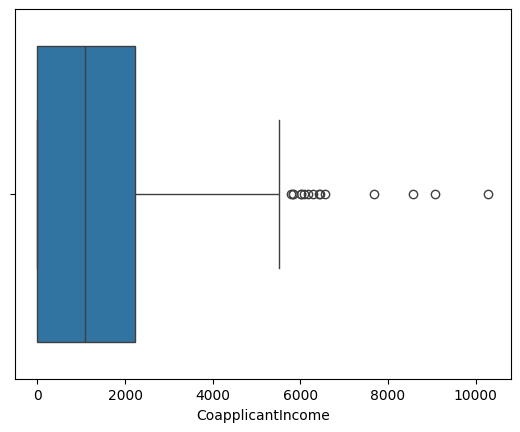
In [32]cell 8
sns.histplot(dataset["CoapplicantIncome"], kde=True, color="#2a78d6") plt.show()
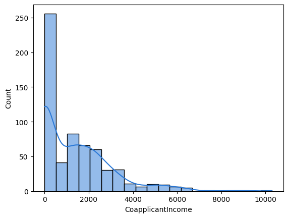
In [33]cell 11
min_range = dataset["CoapplicantIncome"].mean() - (3*dataset["CoapplicantIncome"].std()) max_range = dataset["CoapplicantIncome"].mean() + (3*dataset["CoapplicantIncome"].std()) min_range, max_range
Output
(np.float64(-3450.2033416842687), np.float64(6220.358681490095))
In [34]cell 13
new_data = dataset[dataset["CoapplicantIncome"]<=max_range] new_data.shape
Output
(610, 13)
In [35]cell 15
sns.boxplot(x="CoapplicantIncome" ,data= new_data) plt.show()
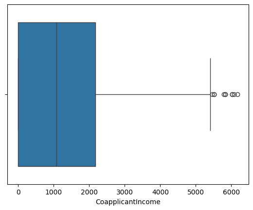
In [36]cell 18
z_score = (dataset["CoapplicantIncome"] - dataset["CoapplicantIncome"].mean()) / (dataset["CoapplicantIncome"].std()) z_score.head()
Output
0 -0.226509 1 -0.114209 2 -0.198589 3 -0.859357 4 0.557107 Name: CoapplicantIncome, dtype: float64
In [37]cell 20
(z_score > 3).sum()
Output
np.int64(8)
In [38]cell 23
z_cleaned = dataset[z_score.abs() < 3] z_cleaned.shape
Output
(610, 13)
In [39]cell 25
"z_score" in z_cleaned.columns, "z_score" in dataset.columns
Output
(False, False)
In [40]cell 27
new_data.shape[0] == z_cleaned.shape[0] == (618 - (z_score > 3).sum())
Output
np.True_
In [41]cell 30
fig, axes = plt.subplots(1, 2, figsize=(10, 3.5), sharex=True)
sns.boxplot(x="CoapplicantIncome", data=dataset, color="#d03b3b", ax=axes[0])
axes[0].set_title(f"Before (n={dataset.shape[0]})")
sns.boxplot(x="CoapplicantIncome", data=z_cleaned, color="#2a78d6", ax=axes[1])
axes[1].set_title(f"After — Z-score (n={z_cleaned.shape[0]})")
for ax in axes:
ax.spines[["top", "right"]].set_visible(False)
plt.tight_layout()
plt.show()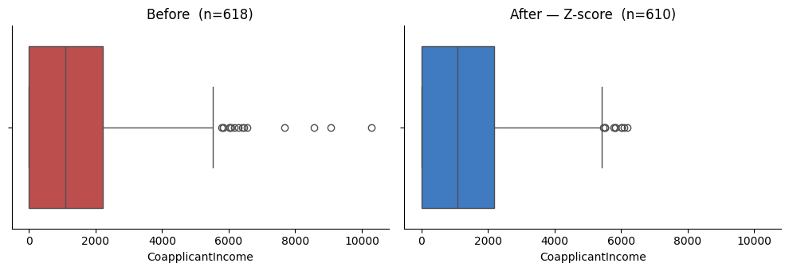
In [42]cell 32
fig, ax = plt.subplots(figsize=(8, 4))
sns.histplot(z_score, kde=True, color="#2a78d6", alpha=0.35, ax=ax)
ax.axvspan(3, z_score.max(), color="#d03b3b", alpha=0.18, label="z > 3 (flagged)")
ax.axvline(3, color="#52514e", linestyle="--", linewidth=0.9)
ax.text(3, ax.get_ylim()[1]*0.96, "z = 3", rotation=90, va="top", ha="right", fontsize=8)
ax.set_title("CoapplicantIncome — distances from the mean, in σ units")
ax.set_xlabel("z-score")
ax.legend(frameon=False)
ax.spines[["top", "right"]].set_visible(False)
plt.tight_layout()
plt.show()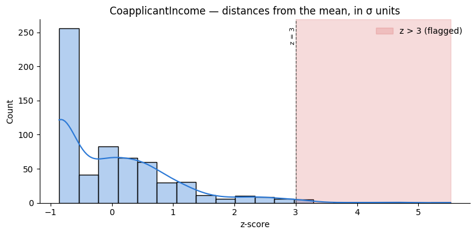
In [43]cell 35
q1 = dataset["CoapplicantIncome"].quantile(0.25)
q3 = dataset["CoapplicantIncome"].quantile(0.75)
iqr_bound = q3 + 1.5 * (q3 - q1)
iqr_flagged = dataset["CoapplicantIncome"] > iqr_bound
z_flagged = z_score > 3
print(f"IQR bound: {iqr_bound:.1f} -> {iqr_flagged.sum()} rows flagged")
print(f"Z-score bound: {max_range:.1f} -> {z_flagged.sum()} rows flagged")
print(f"Flagged by both: {(iqr_flagged & z_flagged).sum()}")
print(f"Flagged by IQR, missed by Z-score: {(iqr_flagged & ~z_flagged).sum()}")Output
IQR bound: 5544.4 -> 15 rows flagged Z-score bound: 6220.4 -> 8 rows flagged Flagged by both: 8 Flagged by IQR, missed by Z-score: 7
In [44]cell 37
dataset.loc[iqr_flagged & ~z_flagged, ["CoapplicantIncome"]].sort_values("CoapplicantIncome")Output
CoapplicantIncome 133 5784 514 5831 232 5834 90 6016 384 6025 428 6074 576 6177
In [45]cell 39
fig, ax = plt.subplots(figsize=(9, 4))
sns.histplot(dataset["CoapplicantIncome"], kde=True, color="#2a78d6", alpha=0.3, ax=ax)
ax.axvspan(iqr_bound, max_range, color="#fab219", alpha=0.35, label=f"Gap — flagged by IQR, missed by Z-score ({(iqr_flagged & ~z_flagged).sum()} rows)")
ax.axvspan(max_range, dataset["CoapplicantIncome"].max(), color="#d03b3b", alpha=0.2, label=f"Flagged by both ({(iqr_flagged & z_flagged).sum()} rows)")
ax.axvline(iqr_bound, color="#2a78d6", linestyle="--", linewidth=1)
ax.axvline(max_range, color="#d03b3b", linestyle="--", linewidth=1)
ax.text(iqr_bound, ax.get_ylim()[1]*0.96, "IQR bound", rotation=90, va="top", ha="right", fontsize=8)
ax.text(max_range, ax.get_ylim()[1]*0.96, "Z-score bound", rotation=90, va="top", ha="right", fontsize=8)
ax.set_title("Why the two methods disagree — the gap between their bounds")
ax.legend(frameon=False, fontsize=8.5)
ax.spines[["top", "right"]].set_visible(False)
plt.tight_layout()
plt.show()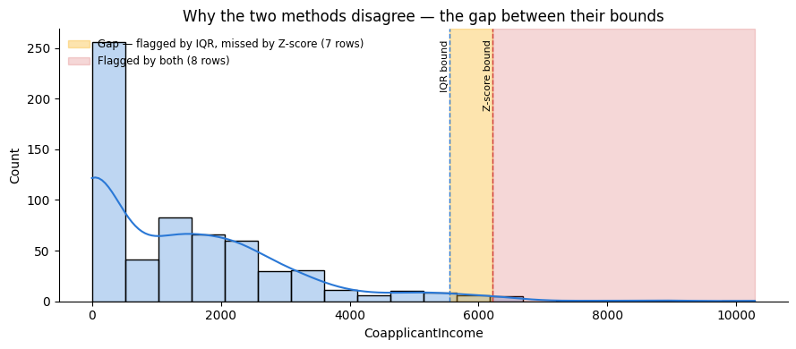
In [46]cell 42
print("Original: ", dataset.shape)
print("IQR-cleaned (13): ", (dataset[dataset["CoapplicantIncome"] <= iqr_bound]).shape)
print("Z-score-cleaned (14): ", z_cleaned.shape)Output
Original: (618, 13) IQR-cleaned (13): (603, 13) Z-score-cleaned (14): (610, 13)
In [47]cell 2
from sklearn.cluster import DBSCAN from sklearn.ensemble import IsolationForest from sklearn.covariance import EllipticEnvelope from sklearn.datasets import make_blobs import matplotlib.pyplot as plt import numpy as np
In [48]cell 4
x,y = make_blobs(n_samples=500, centers=3, cluster_std=0.4,random_state=0)
In [49]cell 5
import pandas as pd
# Display the data created by make_blobs.
data_view = pd.DataFrame(x, columns=['feature_0', 'feature_1'])
data_view['true_blob'] = y
print(f'x shape: {x.shape}')
print(f'y shape: {y.shape}')
print(f'Rows created: {x.shape[0]}')
print(f'Feature columns created: {x.shape[1]}')
display(data_view.head(10))Output
x shape: (500, 2) y shape: (500,) Rows created: 500 Feature columns created: 2 feature_0 feature_1 true_blob 0 1.027035 4.464583 0 1 -1.689281 3.207630 2 2 -1.729911 2.497130 2 3 1.232323 3.657005 0 4 0.201758 4.379299 0 5 0.964997 4.475120 0 6 0.718823 3.414426 0 7 -1.447717 3.350656 2 8 -1.435683 2.998474 2 9 1.275145 3.828209 0
In [50]cell 7
# Compare cluster_std: same 500 rows and 3 groups, different spread.
std_values = [0.2, 0.4, 1.0]
figure, axes = plt.subplots(1, 3, figsize=(14, 4), sharex=True, sharey=True)
for axis, std_value in zip(axes, std_values):
demo_x, demo_y = make_blobs(
n_samples=500,
centers=3,
cluster_std=std_value,
random_state=0
)
axis.scatter(demo_x[:, 0], demo_x[:, 1], c=demo_y, s=12)
axis.set_title(f'cluster_std = {std_value}')
axis.set_xlabel('feature 0')
axis.grid(alpha=0.2)
axes[0].set_ylabel('feature 1')
figure.suptitle('The spread changes; rows, features, and groups stay the same')
plt.tight_layout()
plt.show()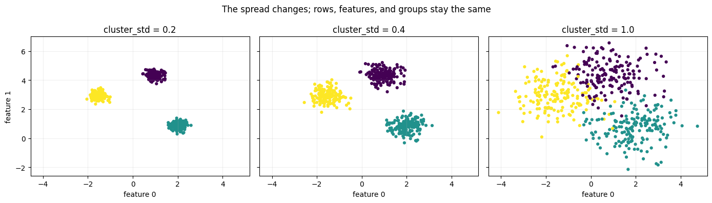
In [51]cell 9
plt.scatter(x[:,0],x[:,1])
Output
<matplotlib.collections.PathCollection at 0x1202152b0>
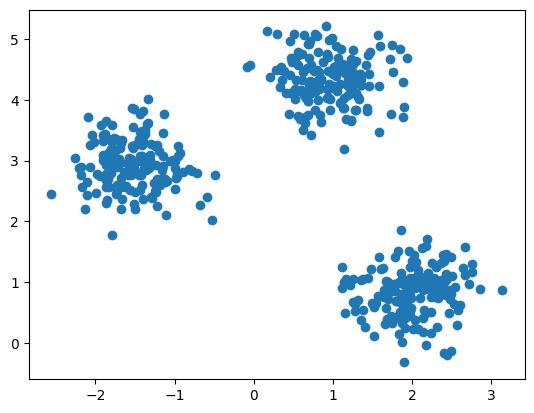
In [52]cell 12
# How DBSCAN measures. It is plain distance and counting - nothing else.
import math
eps = 1.5
min_pts = 3
names = ['A', 'B', 'C', 'D', 'E', 'F']
points = [(1, 1), (2, 1), (1, 2), (2, 2), (3.2, 2), (6, 5)]
print('STEP 1 - distance from every point to every other point')
print(' ' + ' '.join(names))
for name, p in zip(names, points):
row = ''
for q in points:
row = row + f'{math.dist(p, q):6.2f}'
print(f' {name} {row}')
print()
print(f'STEP 2 - who is inside my circle of radius {eps}, including me?')
neighbours = {}
for name, p in zip(names, points):
inside = [n for n, q in zip(names, points) if math.dist(p, q) <= eps]
neighbours[name] = inside
verdict = 'CORE' if len(inside) >= min_pts else 'not core'
print(f' {name} -> {str(inside):22s} count = {len(inside)} {verdict}')
print()
print('STEP 3 - for the ones that are not core: border or noise?')
kind = {}
for name in names:
if len(neighbours[name]) >= min_pts:
kind[name] = 'core'
for name in names:
if name in kind:
continue
near_a_core = [c for c in names if kind.get(c) == 'core' and name in neighbours[c]]
if near_a_core:
kind[name] = 'border'
print(f" {name} is not core, but it sits inside {near_a_core}'s circle -> BORDER")
else:
kind[name] = 'noise'
print(f" {name} is not core and sits inside nobody's circle -> NOISE (label -1)")Output
STEP 1 - distance from every point to every other point
A B C D E F
A 0.00 1.00 1.00 1.41 2.42 6.40
B 1.00 0.00 1.41 1.00 1.56 5.66
C 1.00 1.41 0.00 1.00 2.20 5.83
D 1.41 1.00 1.00 0.00 1.20 5.00
E 2.42 1.56 2.20 1.20 0.00 4.10
F 6.40 5.66 5.83 5.00 4.10 0.00
STEP 2 - who is inside my circle of radius 1.5, including me?
A -> ['A', 'B', 'C', 'D'] count = 4 CORE
B -> ['A', 'B', 'C', 'D'] count = 4 CORE
C -> ['A', 'B', 'C', 'D'] count = 4 CORE
D -> ['A', 'B', 'C', 'D', 'E'] count = 5 CORE
E -> ['D', 'E'] count = 2 not core
F -> ['F'] count = 1 not core
STEP 3 - for the ones that are not core: border or noise?
E is not core, but it sits inside ['D']'s circle -> BORDER
F is not core and sits inside nobody's circle -> NOISE (label -1)In [53]cell 14
# The whiteboard picture: one circle of radius eps around every point.
colour = {'core': 'teal', 'border': 'orange', 'noise': 'black'}
title = {'core': 'core point', 'border': 'boundary point', 'noise': 'noise point'}
label_spot = {'A': (12, -20), 'B': (12, -20), 'C': (-22, 10),
'D': (-4, 14), 'E': (14, 6), 'F': (14, 6)}
figure, axis = plt.subplots(figsize=(8, 6.5))
already_named = []
for name, p in zip(names, points):
this_kind = kind[name]
axis.add_patch(plt.Circle(p, eps, fill=False, linestyle='--',
edgecolor='grey', alpha=0.7))
legend_text = None
if this_kind not in already_named:
legend_text = title[this_kind]
already_named.append(this_kind)
axis.plot(p[0], p[1], 'o', markersize=14, color=colour[this_kind],
label=legend_text)
axis.annotate(name, p, xytext=label_spot[name], textcoords='offset points',
fontsize=13, fontweight='bold')
# what eps actually measures, drawn out from A into empty space
axis.annotate('', xy=(1 - eps, 1), xytext=(1, 1),
arrowprops=dict(arrowstyle='<->', color='crimson'))
axis.text(-0.45, 1.12, f'eps = {eps}', color='crimson', fontsize=11)
# D is core and E sits inside D's circle, so D reaches E in one step
axis.annotate('', xy=(3.15, 2), xytext=(2.05, 2),
arrowprops=dict(arrowstyle='->', color='seagreen', lw=2))
axis.text(1.95, 1.62, 'D --> E : directly density-reachable',
color='seagreen', fontsize=10)
axis.set_title(f'eps = {eps}, MinPts = {min_pts}', fontsize=13)
axis.set_xlabel('feature 1')
axis.set_ylabel('feature 2')
axis.set_aspect('equal')
axis.grid(alpha=0.2)
axis.legend(loc='upper left', fontsize=10)
plt.show()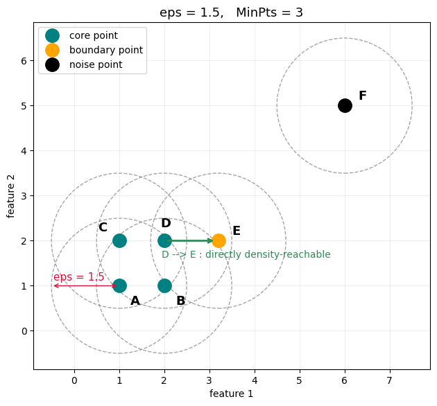
In [54]cell 16
# Does sklearn agree with the hand working?
check = DBSCAN(eps=eps, min_samples=min_pts).fit(np.array(points))
print('point order :', names)
print('sklearn labels_ :', check.labels_)
print('sklearn core points :', [names[i] for i in check.core_sample_indices_])
print('my hand answer :', [kind[n] for n in names])Output
point order : ['A', 'B', 'C', 'D', 'E', 'F'] sklearn labels_ : [ 0 0 0 0 0 -1] sklearn core points : ['A', 'B', 'C', 'D'] my hand answer : ['core', 'core', 'core', 'core', 'border', 'noise']
In [55]cell 18
db = DBSCAN(eps=0.3,min_samples=10).fit(x)
In [56]cell 20
plt.scatter(x[:,0],x[:,1],c=y)
Output
<matplotlib.collections.PathCollection at 0x120478b90>
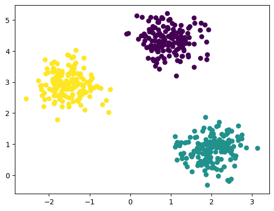
In [57]cell 21
plt.scatter(x[:,0],x[:,1],c=db.labels_)
Output
<matplotlib.collections.PathCollection at 0x1204d25d0>
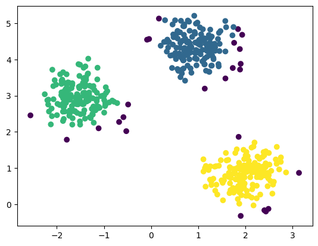
In [58]cell 23
# Teaching experiment: separate names preserve your original x, y, and db.
lesson_db_x = x.copy()
lesson_fig, lesson_axes = plt.subplots(1, 3, figsize=(14, 4), sharex=True, sharey=True)
for lesson_axis, lesson_eps in zip(lesson_axes, [0.15, 0.3, 0.6]):
lesson_labels = DBSCAN(eps=lesson_eps, min_samples=10).fit_predict(lesson_db_x)
lesson_noise = lesson_labels == -1 # one True/False value per row
lesson_groups = len(set(lesson_labels) - {-1})
lesson_axis.scatter(lesson_db_x[~lesson_noise, 0], lesson_db_x[~lesson_noise, 1],
s=14, color='steelblue', label='in a cluster')
lesson_axis.scatter(lesson_db_x[lesson_noise, 0], lesson_db_x[lesson_noise, 1],
s=35, marker='x', color='crimson', label='noise')
lesson_axis.set_title(f'eps={lesson_eps}: {lesson_groups} clusters, {lesson_noise.sum()} noise')
lesson_axis.set_xlabel('feature 1')
lesson_axis.legend(fontsize=8)
lesson_axes[0].set_ylabel('feature 2')
plt.tight_layout()
plt.show()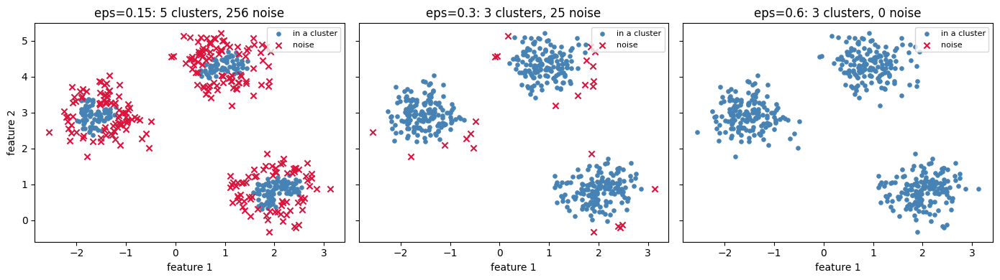
In [59]cell 26
x,y = make_blobs(n_samples=2000, centers=2, cluster_std=0.9,random_state=0)
In [60]cell 27
plt.scatter(x[:,0],x[:,1])
Output
<matplotlib.collections.PathCollection at 0x12071d450>
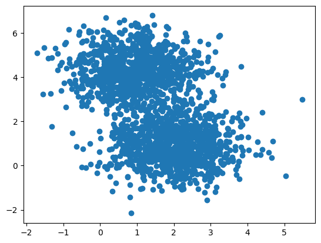
In [61]cell 29
ee = EllipticEnvelope(contamination=0.1) ee.fit(x)
Output
EllipticEnvelope()
In [62]cell 30
prediction = ee.predict(x)
In [63]cell 31
plt.scatter(x[:,0],x[:,1], c= prediction)
Output
<matplotlib.collections.PathCollection at 0x12076b4d0>
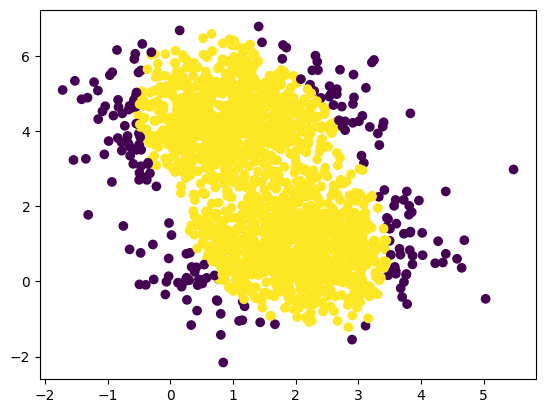
In [64]cell 33
# Use your already-fitted ee and its current two-cloud x.
lesson_ee_flags = ee.predict(x) == -1
lesson_gx, lesson_gy = np.meshgrid(
np.linspace(x[:, 0].min() - 1, x[:, 0].max() + 1, 180),
np.linspace(x[:, 1].min() - 1, x[:, 1].max() + 1, 180)
)
lesson_grid = np.column_stack([lesson_gx.ravel(), lesson_gy.ravel()])
lesson_surface = ee.decision_function(lesson_grid).reshape(lesson_gx.shape)
plt.figure(figsize=(7, 5))
plt.scatter(x[~lesson_ee_flags, 0], x[~lesson_ee_flags, 1], s=10,
color='steelblue', label='inlier (+1)')
plt.scatter(x[lesson_ee_flags, 0], x[lesson_ee_flags, 1], s=25,
color='crimson', marker='x', label='outlier (-1)')
plt.contour(lesson_gx, lesson_gy, lesson_surface, levels=[0], colors='black')
plt.title(f'One fitted ellipse; {lesson_ee_flags.sum()} of {len(x)} rows flagged')
plt.xlabel('feature 1')
plt.ylabel('feature 2')
plt.legend()
plt.tight_layout()
plt.show()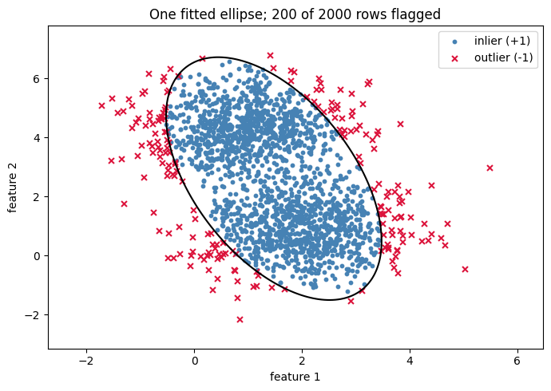
In [65]cell 36
x,y = make_blobs(n_samples=500, centers=3, cluster_std=0.4,random_state=0)
In [66]cell 38
iso = IsolationForest()
In [67]cell 39
iso.fit(x)
Output
IsolationForest()
In [68]cell 40
pred = iso.predict(x)
In [69]cell 41
plt.scatter(x[:,0],x[:,1],c=pred)
Output
<matplotlib.collections.PathCollection at 0x120ab8b90>
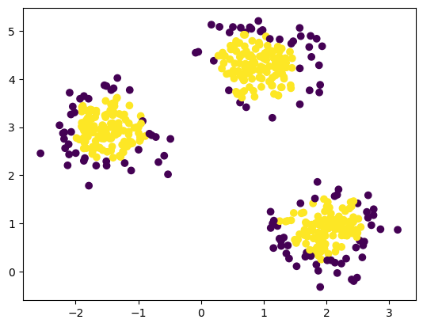
In [70]cell 43
# Reproducible score experiment on the same three-cloud data.
lesson_iso = IsolationForest(random_state=0).fit(x)
lesson_raw = lesson_iso.score_samples(x)
lesson_decision = lesson_iso.decision_function(x)
lesson_flags = lesson_iso.predict(x) == -1
print('score offset:', lesson_iso.offset_)
print('row | score_samples | decision score | predicted label')
for lesson_i in np.argsort(lesson_raw)[[0, len(x) // 2, -1]]:
print(f'{lesson_i:3d} | {lesson_raw[lesson_i]:13.3f} | '
f'{lesson_decision[lesson_i]:14.3f} | {(-1 if lesson_flags[lesson_i] else 1):+d}')
plt.figure(figsize=(8, 3))
plt.hist(lesson_decision, bins=25, color='steelblue', edgecolor='white')
plt.axvline(0, color='crimson', linestyle='--', label='label cutoff = 0')
plt.xlabel('decision score: negative → flagged; nonnegative → inlier')
plt.ylabel('number of observations')
plt.title('Continuous scores become labels after applying a cutoff')
plt.legend()
plt.tight_layout()
plt.show()Output
score offset: -0.5 row | score_samples | decision score | predicted label 442 | -0.645 | -0.145 | -1 415 | -0.470 | 0.030 | +1 181 | -0.425 | 0.075 | +1
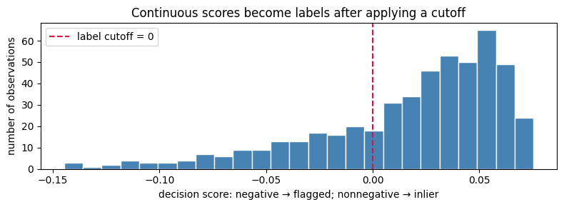
In [71]cell 48
# Visualize DBSCAN's discovered clusters and point types
from matplotlib.lines import Line2D
# Use the three-cluster data for a clear DBSCAN example.
x, y = make_blobs(
n_samples=500,
centers=3,
cluster_std=0.4,
random_state=0
)
db = DBSCAN(eps=0.3, min_samples=10).fit(x)
labels = db.labels_
core_mask = np.zeros(labels.shape, dtype=bool)
core_mask[db.core_sample_indices_] = True
fig, axes = plt.subplots(1, 3, figsize=(16, 4))
# 1. Raw points: no groups have been assigned yet.
axes[0].scatter(x[:, 0], x[:, 1], s=18, color="steelblue")
axes[0].set_title("1. Raw points")
# 2. DBSCAN's discovered cluster IDs.
cluster_ids = sorted(set(labels))
colors = plt.cm.tab10(np.linspace(0, 1, max(len(cluster_ids), 1)))
for color, cluster_id in zip(colors, cluster_ids):
point_mask = labels == cluster_id
point_color = "black" if cluster_id == -1 else color
axes[1].scatter(
x[point_mask, 0],
x[point_mask, 1],
s=22,
color=point_color,
label="noise (-1)" if cluster_id == -1 else f"cluster {cluster_id}"
)
axes[1].set_title("2. DBSCAN cluster labels")
axes[1].legend(fontsize=8)
# 3. Core points build the dense regions; border points join from the edge.
noise_mask = labels == -1
border_mask = ~core_mask & ~noise_mask
axes[2].scatter(
x[noise_mask, 0], x[noise_mask, 1],
s=28, color="black", label="noise (-1)"
)
axes[2].scatter(
x[border_mask, 0], x[border_mask, 1],
s=28, color="orange", label="border point"
)
axes[2].scatter(
x[core_mask, 0], x[core_mask, 1],
s=48, color="teal", edgecolors="white", label="core point"
)
axes[2].set_title("3. Core, border, and noise points")
axes[2].legend(fontsize=8)
for axis in axes:
axis.set_xlabel("feature 1")
axis.set_ylabel("feature 2")
axis.grid(alpha=0.2)
plt.tight_layout()
plt.show()
print(f"Clusters found: {len(set(labels)) - (1 if -1 in labels else 0)}")
print(f"Core points: {core_mask.sum()}")
print(f"Border points: {border_mask.sum()}")
print(f"Noise points: {noise_mask.sum()}")Output
Clusters found: 3 Core points: 415 Border points: 60 Noise points: 25
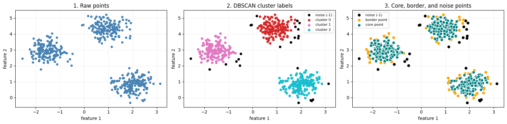
In [72]cell 50
from sklearn.neighbors import LocalOutlierFactor
In [73]cell 52
clf = LocalOutlierFactor(n_neighbors=3) clf.fit(x)
Output
LocalOutlierFactor(n_neighbors=3)
In [74]cell 53
pred = clf.fit_predict(x)
In [75]cell 54
plt.scatter(x[:,0],x[:,1],c=pred)
Output
<matplotlib.collections.PathCollection at 0x120da7c50>
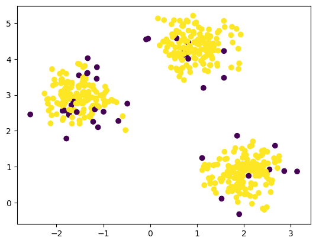
In [76]cell 56
x = np.array([[1,5],[1,6],[1,7],[2,5],[2,6],[6,5],[9,1]])
In [77]cell 57
plt.scatter(x[:,0],x[:,1]) plt.show()
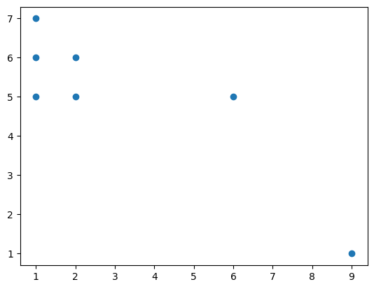
In [78]cell 59
X = x[:,0] y = x[:,1] X = X.reshape(-1,1) clf = LocalOutlierFactor(n_neighbors=3) clf.fit(X)
Output
LocalOutlierFactor(n_neighbors=3)
In [79]cell 60
pred = clf.fit_predict(X) plt.scatter(X, y,c=pred)
Output
<matplotlib.collections.PathCollection at 0x120efc190>
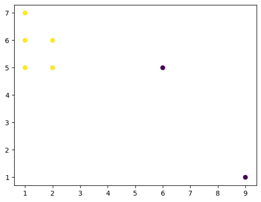
In [80]cell 62
# Compare without overwriting your original X, y, clf, or pred.
lesson_small = x.copy()
lesson_inputs = [lesson_small[:, [0]], lesson_small]
lesson_titles = ['LOF sees feature 1 only', 'LOF sees both features']
lesson_fig, lesson_axes = plt.subplots(1, 2, figsize=(11, 4), sharex=True, sharey=True)
lesson_names = list('ABCDEFG')
for lesson_axis, lesson_input, lesson_title in zip(lesson_axes, lesson_inputs, lesson_titles):
lesson_lof = LocalOutlierFactor(n_neighbors=3)
lesson_prediction = lesson_lof.fit_predict(lesson_input)
lesson_positive_lof = -lesson_lof.negative_outlier_factor_
print('\n' + lesson_title + f'; input shape = {lesson_input.shape}')
print('row | positive LOF | label')
for lesson_name, lesson_score, lesson_label in zip(lesson_names, lesson_positive_lof, lesson_prediction):
print(f'{lesson_name:3s} | {lesson_score:12.3f} | {lesson_label:+d}')
for lesson_label, lesson_color, lesson_marker, lesson_text in [
(1, 'steelblue', 'o', 'inlier (+1)'), (-1, 'crimson', 'x', 'outlier (-1)')
]:
lesson_mask = lesson_prediction == lesson_label
lesson_axis.scatter(lesson_small[lesson_mask, 0], lesson_small[lesson_mask, 1],
color=lesson_color, marker=lesson_marker, s=70, label=lesson_text)
for lesson_name, lesson_point in zip(lesson_names, lesson_small):
lesson_axis.annotate(lesson_name, lesson_point, xytext=(5, 5), textcoords='offset points')
lesson_axis.set_title(lesson_title)
lesson_axis.set_xlabel('feature 1')
lesson_axis.legend()
lesson_axes[0].set_ylabel('feature 2 (displayed in BOTH panels)')
plt.tight_layout()
plt.show()Output
LOF sees feature 1 only; input shape = (7, 1) row | positive LOF | label A | 1.000 | +1 B | 1.000 | +1 C | 1.000 | +1 D | 1.000 | +1 E | 1.000 | +1 F | 3.611 | -1 G | 4.400 | -1 LOF sees both features; input shape = (7, 2) row | positive LOF | label A | 0.898 | +1 B | 1.205 | +1 C | 1.073 | +1 D | 1.032 | +1 E | 0.898 | +1 F | 3.316 | -1 G | 4.139 | -1
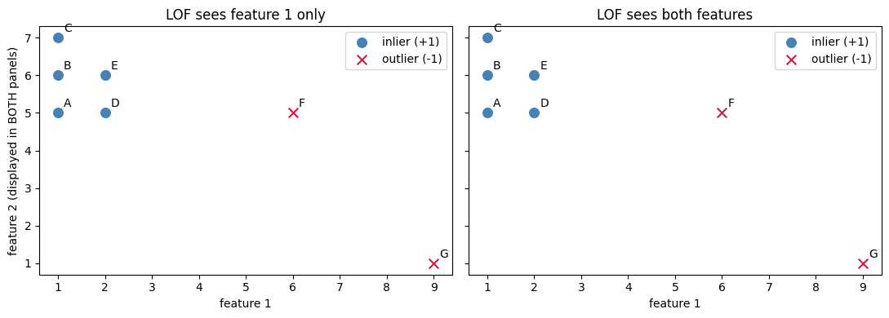
In [81]cell 64
print('k | positive LOF for F | positive LOF for G | rows flagged')
for lesson_k in [2, 3, 6]:
lesson_k_model = LocalOutlierFactor(n_neighbors=lesson_k)
lesson_k_labels = lesson_k_model.fit_predict(lesson_small)
lesson_k_scores = -lesson_k_model.negative_outlier_factor_
lesson_flag_names = [name for name, label in zip(lesson_names, lesson_k_labels) if label == -1]
print(f'{lesson_k} | {lesson_k_scores[5]:18.3f} | {lesson_k_scores[6]:18.3f} | {lesson_flag_names}')Output
k | positive LOF for F | positive LOF for G | rows flagged 2 | 4.062 | 4.070 | ['F', 'G'] 3 | 3.316 | 4.139 | ['F', 'G'] 6 | 1.074 | 0.970 | []